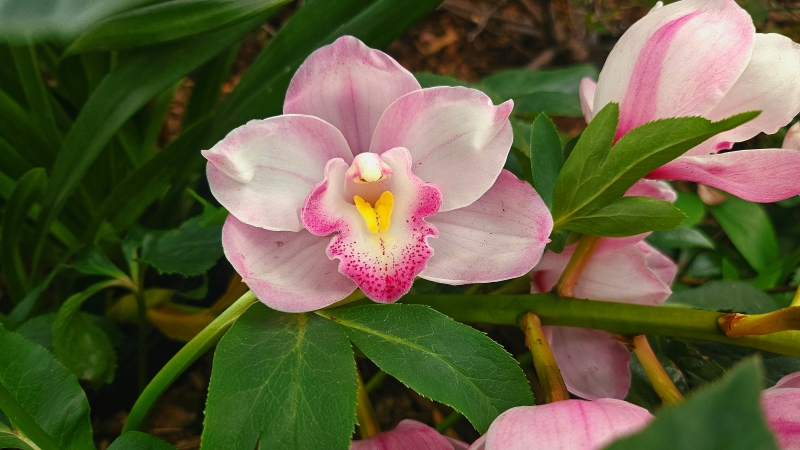
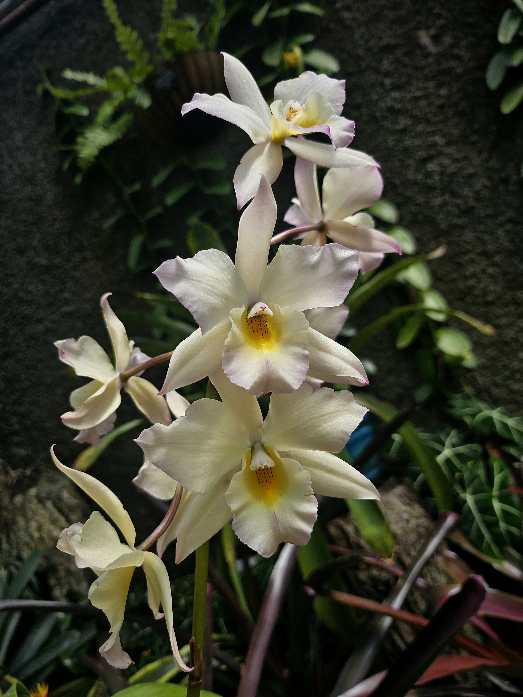
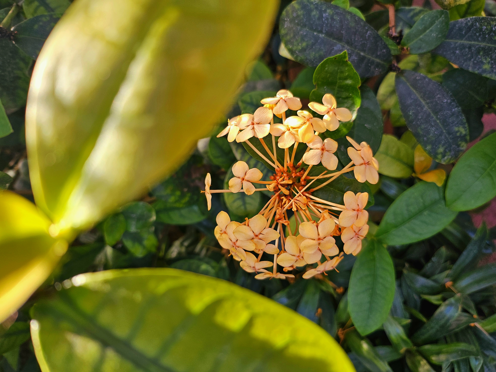

I enjoy many genres of music, however, I've recently gotten into reggaeton. Tainy is my favorite producer. Here's an album:
DATA - TainyI like taking photos of stuff I find beautiful. Since my next section is about flowers, here's some:
  I am interested in the aesthetics of flowers and their psychoactive properties. Flowers can be visually pleasing but the consumption of certain flowers can have life-changing effects.
Here are some of those flowers, and their potential effects: